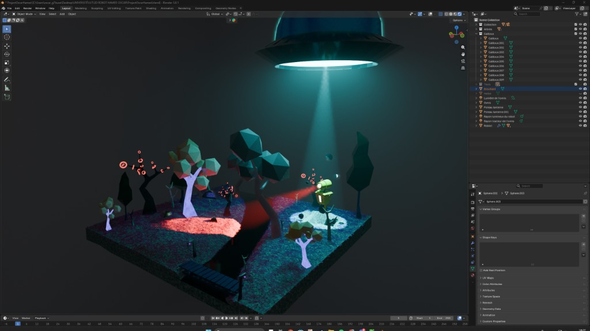
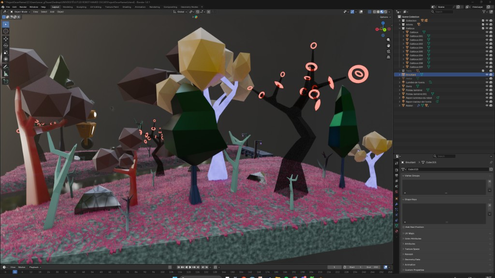

Projet 3D Blender – Environnement & robot
Projet universitaire en 3D avec Blender. Le sujet était libre : j’ai choisi de créer un environnement de type planète alien, d’y placer un robot et un OVNI avec effet de rayon tracteur, en travaillant les textures et l’éclairage de A à Z.
Contexte & objectif
L’objectif était de modéliser une scène 3D complète : un environnement cohérent, un personnage (robot) et des effets de lumière. J’ai opté pour une ambiance « planète alien » pour exploiter des textures et des lumières marquées, tout en restant dans un style low-poly lisible.
Environnement

Le décor repose sur un sol texturé, une rivière ou tranchée traversée par un pont, et une végétation stylisée (arbres et éléments organiques). Pour la pelouse, j’ai utilisé l’outil Hair de Blender sur le sol afin de générer des motifs et du relief, ce qui donne un rendu plus vivant et moins plat qu’un simple plan texturé.
Robot & OVNI

Un robot humanoïde a été modélisé et placé dans l’environnement, en position de regard vers un autre point de la scène pour renforcer la narration. Au-dessus de lui, un OVNI (soucoupe avec dôme) est équipé d’un rayon tracteur : cône de lumière dirigé vers le robot. Les lumières ont été créées et réglées dans Blender (lumière de l’OVNI, rayon tracteur, éventuel rayon lumineux du robot) pour obtenir un éclairage lisible et une hiérarchie claire dans la scène.
Textures & effets (Shading)

Les textures sont originales et travaillées dans l’interface Shading de Blender : matériaux pour le sol, la végétation et les éléments du décor, avec des effets spéciaux (émission, reflets, motifs) pour renforcer l’ambiance « alien ». Les arbres et certains éléments intègrent des formes géométriques ou des cercles lumineux pour un rendu cohérent avec le thème.